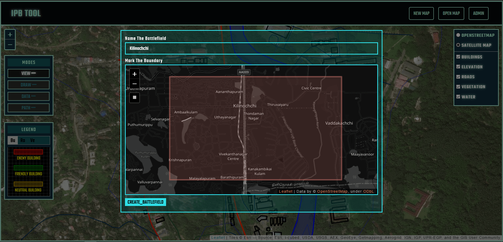
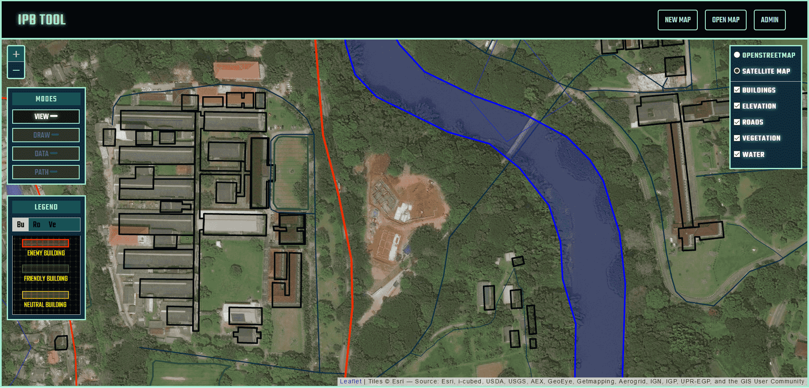
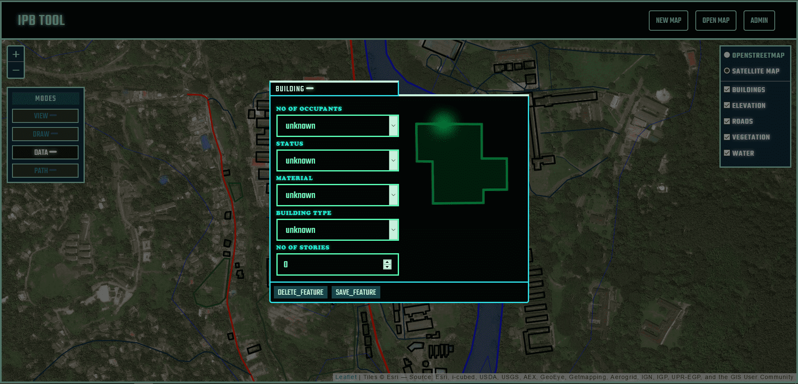
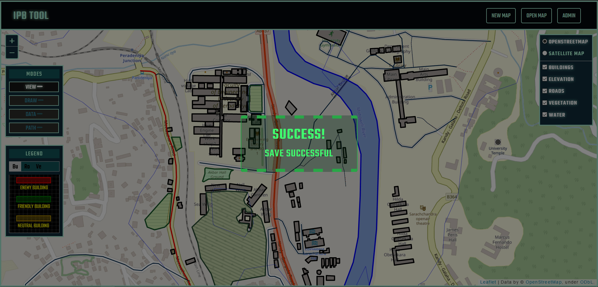
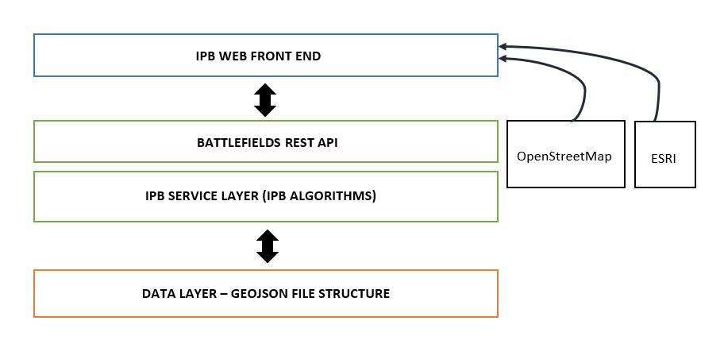
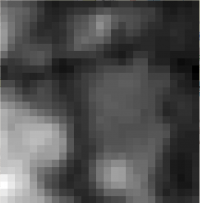
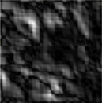
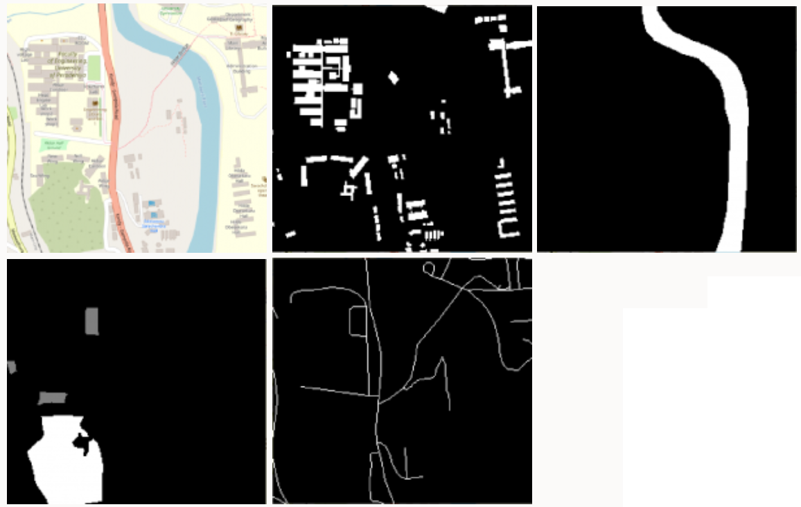

Final Year research project - Group
Gilab Repository
My Contribution was Backend development, Algorithms development and Frontend Improvement.
Abstarct
In military operations armed forces have to get a better idea of the area in which they have to operate including terrain features, threats and avenues of approach. So they gather intelligence on the location, enemy, weather, vegetation, infrastructure and many such factors before making decisions. Intelligence Preparation of the Battlefield (IPB) is the name given for that process of analyzing the situation and making decisions based on predictions. Usually this process happen manually by officers using hard copy maps and it have number of inconveniences. In this paper, we implement and present a set of algorithms, tools and approaches for automating terrain analysis and decision making in Intelligence Preparation of the Battlefield process and compare their results with a manual analysis.
Team
Project Supervisors
-
Dr. Isuru Nawinne - Department of Computer Engineering, University of Peradeniya
-
Dr. Janaka Alawatugoda - Department of Computer Engineering, University of Peradeniya
Introduction
IPB is a process that starts in advance of operations and continues during operations planning and execution. It provides guidelines for the gathering, analysis, and organization of intelligence. The purpose of this intelligence is to inform a commander’s decision process during the preparation for, and execution of a mission. Therefore IPB is a Command and staff tool which allows systematic and continuous analysis of the enemy and the battlefield environment. It presents the results of the process in a graphical format. It is an integrated method of analysing Enemy, Ground and Friendly Forces factors in the Estimate.
Basically there are four steps in IPB process. They are,
-
Define the battlefield environment
-
Describe the battlefield’s effects
-
Evaluate the threat
-
Determine threat COAs
The resulting product of IPB is identification of various areas of the battlefield
that affect Courses of Action (COAs). The four distinctive courses
of action are,
-
engagement areas
-
battle positions
-
infiltration lanes
-
avenue of approach
Any force that has the control of the key terrain has the military advantage. Key terrain areas cannot be defined by geographical features alone. The evaluation of terrain features must be fused with information about weather, enemy asset types, friendly and enemy range of fire, enemy doctrine and type of operation.
The problem with current process is that IPB is done manually by intelligence officers using hard copy maps on which they anotate various significant areas, such as key terrain or defensible terrain. This manual process suffers from a number of inefficiencies as described below.
-
No variable zooming in and out to obtain desired level of detail
-
Annotating the maps is time consuming.
-
Notations on maps get cluttered with the risk of being misread.
-
Information could be disregarded or not used effectively in the process of the IPB.
Our Works
The research was basically spllited in to two major sections such that each section contain three milestones. The two sections was,
-
Visual Support for Automating the Intelligence Preparation for Battlefield (IPB) Process
-
Implement Automation of Intelligence Preparation for Battlefield
So the six milestones for the project was,
-
Web-based platform to display overlays on a map.
-
Infrastructure to efficiently store data for overlays.
-
Integrating the data storing mechanism with graphical user interface.
-
A grid based combined obstacle overlay by collecting the vector overlays to a grid
-
Generating the potential mobility corridors in the terrain
-
Risk evaluation of corridors to predict the avenues of approach and key areas.
Web-based platform to display overlays on a map
As the IPB need a visual tool that allows military staff to add battlefield data in to the system and also visualize them as overlays, we needed to firstly develop a web based platform to add overlays and visualize them. So we firstly researched about a framework that we can use to do the map based functions. Simply from front-end side the application should work like a GIS software. Following technologies were chosen by us to be used fro the web platform.
Leafletjs – Leaflet is the leading open-source JavaScript library for mobile-friendly interactive maps.
Open street Maps – OpenStreetMap is a free editable map of the whole world that is being built by volunteers largely from scratch and released with an open-content license.
Infrastructure to efficiently store data for overlays
We needed to find a data storing mechanism and also a data format to store the overlay data. As the data in overlay are spatial data with attributes, We researched about the available methods to store such data.
So the available options to store those data were using a vector
format or a raster format.
So as our web application was JS based, we choose GeoJSON
which is a format for encoding a variety of geographic data structures.
To store and provide the required overlay information relevant to battlefields, there should be a back-end application. As our future algorithms and models are based on python, we used Python Flask as the web framework for our back-end and the we decided to use REST architecture to build the back-end web service.
Following were the attributes we defined for our overlays
Building
-
No of occupants
-
Status
-
Material
-
Building Type
-
No of stories
Vegetation
-
Vegetation Type (grassland, shrubland, woodland, medium density forest, high denisty forest, unknown)
Water
-
Water body type (water, river, reservoir, dock, wetland, unknown)
-
Mark known points of shallow or deep
Roads
-
Road type (tertiary, track, unclassified, secondary, trunk, primary, motorway_link, trunk_link, primary_link, road, secondary_link, tertiary_link, motorway)
Elevation
-
Elevation : float value
Integrating the data storing mechanism with graphical user interface
Finally we had to integrate the back-end we developed using the data storing mechanism and data retrieving mechanisms with the front-end developed with map overlays
So in our first section of the project, we implemented the web application tool to perform following major tasks.
-
Create and save multiple battlefields(maps).
-
Automatically generate the buildings, water, roads, elevation, vegetation overlays when a new battlefield is created.
-
View a battlefield on user interface graphically with a map (Satellite or Topographical)
-
View the overlays generated for the battlefield graphically on the map separately.
-
Add new buildings, water bodies, vegetation areas, roads on the battlefield using a drawing tool
-
Add values for the defined attributes of the newly drawn shape.
-
Edit values of attributes of automatically generated geographical features.
-
Remove geographical features of overlays.
-
Save changes to be able to access later.
-
All the information are stored in the backend.
Following images are few screenshots from the tool.
 Creating the battlefield
 Generated overlays added on the map
 Adding data to an geographic feature
 Save the data insertion
The architecture implemented for the system was basically a 3-Tier Architecture. Presentation layer being our web tool using LeafletJS, Application layer being the python web application using Flask and use REST web services to communicate with Presentation layer. Data layer is the filesystem which stores GeoJSON files in a hierarchical structure. Following diagram is the system architectural diagram.

The auto generation of overlays happen in IPB Service Layer, where the available geographical data for Sri Lanka stored in the server are processed in order to produce the overlays of the given boundaries.
We have obtained relevant digital geographical data for Sri Lanka and pre-processed them to suit the overlays we are considering.
The Elevation data for Sri Lanka have been obtained from highest-resolution topographic data generated from NASA's Shuttle Radar Topography Mission (SRTM). We generated the island wide 25m contour lines using that DEM data and that is used for creating elevation overlay. Also we stored the raster DEM file in server for some other functions including trafficability calculation.
OpenStreetMap data for Sri Lanka were obtained from https://download.geofabrik.de/asia/sri-lanka.html and processed to obtain overlay data for Sri Lanka.
-
OSM Land Use data was used to obtain vegetation overlay by filtering vegetation and mapping their properties to our defined attributes.
-
OSM Building data was processed to get building overlay such that their properties mapped into our defined building attributes.
-
OSM water data was coverted into water overlay
-
OSM road data was converted in to road overlay.
A grid based combined obstacle overlay by collecting the vector overlays to a grid
As we have built the overlays using a vector format with properties, we needed to convert those data overlays to grids of their properties as grid based analysis is used for the processing. We started from the elevation raster file of Sri Lanka obtained from SRTM dataset. In our program to get the combined obstacle overlay first step was to get the elevation grid. So our program was added the functionality to clip the Sri Lanka elevation raster file to the size of the battlefield firstly.
The NASA’s Space Shuttle Radar Topography Mission (SRTM) DEM data's resolution is about 30 meters. It has pixels (cells) of grid approximately 30m containing elevation data. See the image below.

We needed to map these elevation data to a grid of cells of size 10 times smaller than SRTM data resolution for better accuracy as 30m is not a good resolution for finding mobility. So elevation data graph was resampled using bi-linear interpolation in order to reduce the resolution of the overlay grid size to about 3 meters. The elevation data raster overlay after resampling is shown in below.
So the other overlay grids was also to be built to the same shape of the elevation grid obtained, such that they can be put one on other.
So next from the elevation grid, an additional grid of slope was derived. The slope grid is produced such that slope at grid cell (x,y) is assigned the mean of the slope between (x,y) and each of the surrounding grid cells. Following Figure shows the generated slope overlay for above elevation example.

Rasterization techniques were used to get the rater images of the building, water, road and vegetation overlays preserving their properties and those raster images of the overlays were converted to a numpy array for our processing. Following images will show the original map, building grid, water grid, vegetation grid and road grid obtained using our program respectively.

Our target in this milestone was to obtain combined obstacle overlay by combining all these overlays in a suitable way to achieve our goal. So we constructed an overlay called trafficability grid combinning all those overlays (elevation, slope, building, vegetation, water, roads)
Trafficability grid is a grid witch has cells representing squares on land, where each grid cell represent the trafficability of the cell. In another way each cell give a value defining how much it is difficult to troop maneuver withing that cell.
We considered the electric flow model as a foundation of our algorithm to get trafficability grid. In electric current point of view, the electric current or the flow of electrons is determined by the resistance of the medium. The resistance is determined by the resistivity of the materials used in the medium. If the resistance per unit length is k, the resistance of l length medium becomes k x l.
So for each property that we consider that would effect trafficability from the overlays, we defined a value denoting resistance per distance for troop maneuver. So the total resistance per distance for a given grid cell is the sum of all resistances per length of properties that belong to that cell.
So our algorithm used in obtaining the trafficability using the resistance model is given below.
Generating the potential mobility corridors in the terrain
To add
Risk evaluation of corridors to predict the avenues of approach and key areas
To add